Вежба 2. Да се најде степенската низа на следните два графа:
Станува збор за едноставен граф.
а) 4, 4, 4, 4, 4, 4, 4, 4, 4, 2, 2, 2, 2, 2, 2;
б) 6, 5, 4, 4, 4, 3, 2, 2, 2, 2, 2, 2, 2.
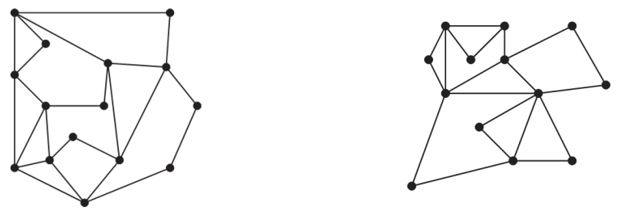
Решение
Степен на едно теме во неориентиран граф е бројот на ребра кои се поврзани со
него, освен што алка се брои два пати.
Вежба 3. Колку ребра има граф кој има степенска низа 4, 3, 3, 2, 2?
Нацртајте го тој граф.
Според теорема на ракување, следи
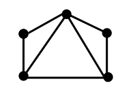
Решение
`2*e = 4 + 3 + 3 + 2 + 2`
`2*e = 14`
`e = 7`
Вежба 4. Дали постои граф со степенска низа 5, 5, 4, 3, 3, 3, 2, 1, 1,
0?
Според теорема на ракување, следи
`■`
Решение
`2*e =5 + 5 + 4 + 3 + 3 + 3 + 2 + 1 + 1 + 0 = 27`
Бројот на ребра е 13,5, па од тука ваков граф не постои.
Вежба 5. Граф со 21 ребро има 7 темиња со степен 1, 3 темиња со степен 2, 7
темиња со степен 3, а останатите темиња се со степен 4. Колку вкупно темиња
има графот?
Нека бројот на темиња со степен 4 во овој граф го означиме со x.
`■`
Решение
Според теорема на ракување, следи
7 + 2*3 + 3*7 + 4*x = 2*21
7 + 6 + 21 + 4*x = 42
34 + 4*x = 42
x = 2
Според тоа, графот има 2 темиња со степен 4, па вкупниот број на темиња е 7 + 3
+ 7 + 2 = 19.
Вежба 6. Докажете дека во едноставен граф со најмалку две темиња мора да
постојат две темиња кои имаат ист степен.
Дадено е дека `G` е едноставен граф со `n` јазли.
`■`
Решение
Бидејќи `G` e едноставен, најголемиот степен кој може да го има едно теме е
`n-1`, а најмалиот можен степен е `0`.
Нека претпоставиме дека сите темиња имаат различен степен (`0, 1, 2, ..., n–1`),
и нека темето `v` има степен `0`, а темето `u` има степен `n–1`. Но, за да
темето `u` има степен `n-1` мора да постои ребро помеѓу `u` и `v`. Ако постои
тоа ребро помеѓу `u` и `v`, степенот на `v` треба да е `1`, што е контрадикција
со претпоставката дека `v` има степен 0.
Со тоа е покажана вистинитоста на тврдењето од задачата.
Вежба 7. Докажете дека во една група на луѓе мора да постојат двајца кои
познаваат ист број на луѓе од таа група.
Конструираме едноставен граф `G = (V, E)`, каде множеството `V` е множество од
сите луѓе во групата, а постои ребро помеѓу човекот `v` и човекот `u` доколку
`v` и `u` меѓусебно се познаваат. Според тоа, степенот на секое теме `t` би го
претставувал бројот на луѓе кои `t` ги познава во таа група. Тука можеме да го
искористиме тврдењето од Задача 6 кое гласи дека во `G` постојат две темиња со
ист степен. Тоа би значело дека во групата постојат двајца луѓе кои познаваат
ист број на други луѓе од групата, со што и се докажува тврдењето од Задача 7.
`■`
Решение
Вежба 8. Најди го влезниот и излезниот степен на секое теме во
ориентираниот граф G прикажан на сликата.
Влезен степен на секој јазол:
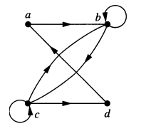
Решение
`deg^(-)(a) = 1`
`deg^(-)(b) = 3`
`deg^(-)(c) = 2`
`deg^(-)(d) = 1`
Излезен степен на секој јазол:
`deg^(+)(a) = 1`
`deg^(+)(b) = 2`
`deg^(+)(c) = 3`
`deg^(+)(d) = 1`
Вежба 9. Нацртај ги следните графови: Комплетен граф е едноставен граф со `n` јазли и ребро помеѓу секој пар на јазли
`K_(1,8)` е комплетен дводелен граф кој има множества на јазли множество од еден
јазол и множество од 8
јазли. Јазолот кој е сам во множеството треба да се поврзе со сите други јазли
`C_7 е циклус граф. `K_(4,4)` е комплетен дводелен граф кој има две множества на јазли множество од
еден 4 јазли и множество од 4
јазли. Секој јазол од првото мноѓесто треба да се поврзе со секој јазол од
второто множество
a) `K_7`
Решение
Решение
Решение
Решение
Вежба 10. Кој од следните графови е бипартитен? Доколку графот е комплетен
бипартитен, `K_(m,n)`, определете ги `m` и `n` и двете подмножества од темиња.
а) Графот е бипартитен. `V_1 = {a, b, c, d}; V_2 = {e}`; `K_(1, 4)`
б) Графот е бипартитен. `V_1 = {a, c}; V_2 = {b, d, e}`; `K_(2, 3)`
в) Графот не е бипартитен.
в) Графот не е бипартитен. Пробај сам!
Помош: За да одредите дали графот е бипартитен, применете ја теоремата за бипартитни графови
(Теорема 4 - Едноставен граф е дводелен ако и само ако е можно да се додели eдна од две
различни бои на секој јазол од графот така да два соседни јазли немаат иста боја.) со
различната боја на соседните темиња.
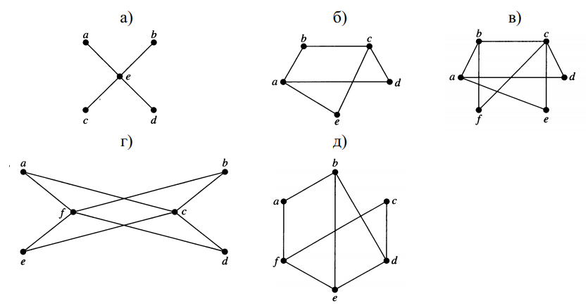
Решение

Вежба 11. Претпоставете дека има 5 девојки и 6 момчиња на еден остров.
Секоја девојка би се омажила за некои од момчињата на островот и секое момче
би се оженило за девојката која сака да се омажи со него. Претпоставете дека
Ана би се омажила за Петар, Лука и Горан. Марија би се омажила за Коста и
Лука. Катерина би се омажила за Петар, Никола и Оливер. Дијана би се
омажила за Петар, Лука, Никола и Оливер. Елизабета би се омажила за Петар и
Горан.
Графот `G = (V, E)` е следниот:
Се започнува со темињата од множеството на девојките кои имаат најмал степен.
а) Моделирајте ги можните бракови на островот користејќи бипартитен граф;
Решение
`V = {`Ана, Марија, Катерина, Дијана, Елизабета, Петар, Лука, Горан, Никола, Оливер,
Коста`}`
Дводелниот граф е `G=(V_1, V_2)`
`V_1 = {`Ана, Марија, Катерина, Дијана, Елизабета`}`; Бројот на членови (кардинал)
на множеството е `abs(V_1) = 5`
`V_2 = {`Петар, Лука, Горан, Никола, Оливер`}`; Бројот на членови (кардинал) на
множеството е `abs(V_2) = 4`
`E = {`(Aна, Петар), (Ана, Лука), (Ана, Горан), (Марија, Коста), (Марија, Лука),
(Катерина, Петар), (Катерина, Никола), (Катерина, Оливер), (Дијана, Петар), (Дијана,
Лука), (Дијана, Никола), (Дијана, Оливер), (Елизабета, Петар), (Елизабета,
Горан)`}`
Решение
На пример, Марија може да е со Коста или Лука, бидејќи за нив имаме најмал избор, па
се продолжува со јазлите на девојките кои имаат поголем степен (поголем избор во
стил доколку некои нивни можности за момчиња веќе се избрани, се уште ќе имаат
можности за поврзување со темиња од множеството на момчиња кои не се искористени).
Притоа, внимаваме да не искористиме некое теме (од момчињата или девојчињата) два
пати. Едно од можните решение е: `M = {`(Ана, Петар), (Марија, Коста), (Катерина,
Оливер), (Дијана, Никола), (Елизабета, Горан)`}`.
Вежба 12. Комплетен бипартитен граф `K_(m,n)` се дефинира со две подмножества
`V_1` и `V_2` на множеството темиња `V` кои немаат пресек: `V_1` со големина `m` и `V_2` со
големина `n`
Секое теме од V1 е соседно со секое теме од V2, па според тоа бројот на рeбра во
`K_(m,n)` е `m*n`;
Секое теме од `V_1` има степен `n` бидејќи е соседно со секое теме од `V_2`. Слично,
секое теме од `V_2` има степен `m` бидејќи е соседно со секое теме од `V_1`. Според
тоа, степенската низа на `K_(m,n)` се состои од `m` пати `n` и `n` пати `m`, во
нерастечки редослед.
Графот `К_n` има `n` јазли и секој јазол е поврзан со останатите `n – 1` јазли со
точно едно ребро. Според тоа, збирот од степените на сите јазли изнесува `n * (n –
1)`. Според Теоремата на ракување, збирот од степените на сите темиња е еднаков на
два пати по бројот на ребра `e`, т.е. `n * (n – 1) = 2 * e`, од каде за бројот на
ребра e на графот `К_n` се добива:
Секое од `n`-те темиња е соседно со останатите `n – 1` темиња, па низата на степени
е;
а) Колку ребра има `K_(m,n)`?;
Решение
Решение
Ако `m >= n`, тогаш низата на степени е:
`ubrace(m, ...,m)_("n"), ubrace(n, ...,n)_("m")`
Ако n ≥ m, тогаш низата на степени е:
`ubrace(n, ...,n)_("m"), ubrace(m, ...,m)_("n")`
Решение
`e = (n * (n-1))/2`
Решение
`ubrace(n-1, ...,n-1)_("n")`
Вежба 13.
Комплетен бипартитен граф `K_(m,n)` има `m*n` ребра. `15 = 3* 5 = 1*15`. Па можни се
две решенија: `К_(1,15)` и `К_(3,5)`;
Комплетен граф со `n` темиња има `(n * (n-1))/2` ребра. Се бара решението на
равенката `(n * (n-1))/2 = 28` т.е. на `n * (n -1) = 56`, а тоа е `n = 8`. Според
тоа, бараниот комплетен граф има 8 темиња.
а) Дали постои комплетен бипартитен граф со 15 ребра?;
Одговорот да се објасни. Ако постојат,
да се нацртаат
Решение
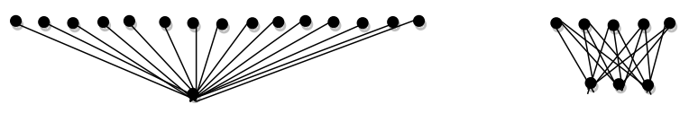
Решение
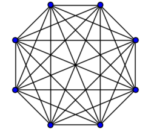
Вежба 14. Глувче сака да изеде парче сирење во форма `3 х 3 х 3`. Глувчето
започнува да го јаде сирењето од ќошот и со еден залак јаде по `1 х 1 х 1`. Дали
може последниот залак на глушецот да биде централниот дел од сирењето?
Ќе конструираме граф на следниот начин: Секое теме од графот ќе претставува `1 х 1 х
1` коцка. Поврзуваме две темиња `x` и `y` ако глушецот може да се помести од `x` до
`y` (т.е. кога `x` и `y` имаат заедничка страна, а не ќош или ребро!).Решение
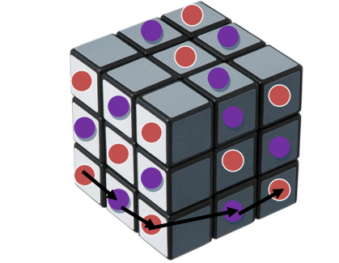
Тврдиме дека `G` е бипартитен. Неговата бипартиција `X uu Y` ја дефинираме на
следниот начин: ги ставаме `8`-те коцки од ќошовите и коцките од центрите на секоја
страна (6 на број) во `X`, а сите останати коцки во `1 х 1 х 1` во `Y` (т.е.
центарот на `3 х 3 х 3` коцката и една централна коцка од сите `12` рабови на `3 х 3
х 3` коцката). Дали ова е навистина бипартитен граф? Јасно е дека никои два ќоша
немаат заедничка страна и ниту едни централни коцки не се соседни една со
друга, а исто така и коцките од ќошот и центарот од страната не се
соседни. На ист начин и центарот од `3 х 3 х 3` коцката не е соседен со
ниту една од централните коцки од сите `12` рабови на `3 х 3 х 3` коцката.
Овие централни коцки исто така не се соседни.
Па планот е глушецот да го изеде патот кои ги содржи сите темиња од `G`
започнувајќи од `Х` (сите ќошови се таму) и завршувајќи во `Y` (центарот на
`3 х 3 х 3` коцката е таму). Па, во патот мора да имаме наизменично
поминување на темињата од `X` и `Y` бидејќи графот е бипартитен. Сепак,
|X| = 14 > 13 = |Y| и ако започнеме во `X` тоа не е возможно.
Вежба 15. Нацртај цртеж со сите:
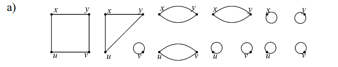
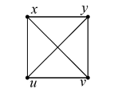
Не постои граф со пет темиња, таков што секое теме има степен три, бидејќи вкупниот
број на ребра треба да биде `2*e = 5 *3 = 15 -> e =7.5`
а) правилни графови со четири темиња, такви што секое теме има степен два;
да се нацртаат
Решение
Решение
Решение
Вежба 16. Да се нацртаат сите подграфови на графот на сликата подолу
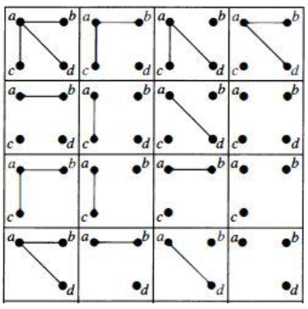
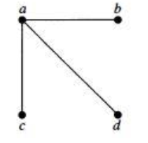
Решение